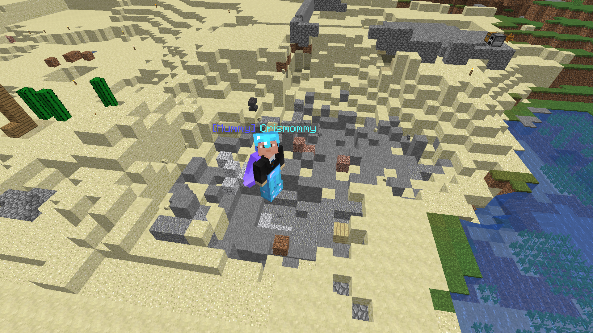

Website created by LeafyIsHeree
Welcome to the JamVille Official Website!
This goes for all trolls and hackers and griefers on JamVille!

Caption: "Goodbye KingJames (AKA Troller)'s House" -Crismommy 2020
This hole is where KingJames used to live, No not the hole, there was a house, Below is
another screenshot of what it looked like before it was finished off.
Progress on the Wonder Hotel Started!
Started by CrisMommy, The Wonder Hotel is going to be a place where players on the realm
can pay 5 a day to stay in a 10x10 room, this way they don't
a day to stay in a 10x10 room, this way they don't
have to build their own house. "This hotel is part of the Wonder Cave restaurant." -Crismommy
Below are some screenshots of the Under-Construction Build.